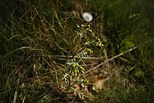

Le séneçon commun, séneçon vulgaire, ou senecio vulgaris est une de nos mauvaises herbes annuelles les plus répandues ; en automne et en hiver, il continue à pousser et fleurir, alors que la majorité des autres plantes sont en sommeil.
Il appartient à la famille des composées ou astéracées.
Il forme une touffe vaguement arrondie qui peut atteindre 20 à 40 cm de haut. Ses tiges plus ou moins ramifiées sont cannelées, verdâtres ou rougeâtres et une fine pilosité les recouvre le plus souvent.
Les feuilles, glabres ou pubescentes, d'une couleur vert brillant, sont épaisses et présentent une découpure pennée ; suivant leur position sur la tige, elles sont embrassantes ou munies d'un court pétiole. Leur bordure présente une denture espacée et peu prononcée. La floraison dure longtemps mais ne présente pas d'intérêt décoratif en raison de la petite taille et de la couleur des fleurs.
Les capitules sont groupés en une grappe terminale, ils sont d'abord dressés mais certains se penchent ensuite. Leur involucre cylindrique est formé de bractées étroites et terminées par une pointe noire, il est doublé par une deuxième série de bractées beaucoup plus courtes, également à pointes noires.
Les fleurs jaunes, tubulaires et sans ligules débordent peu de l'involucre.
Les fruits sont des akènes brunâtres et allongés, munis d'une aigrette blanche et disposés comme ceux du pissenlit. L'aspect de ces capitules de fruits plumeux et blancs est à l'origine du nom de cette plante car en latin, senex signifie vieillard (ici c'est la chevelure du vieillard qui est évoquée).
Ce séneçon se reproduit tellement bien par semis, qu'au cours d'une année, 3 générations se succèdent et la plante est peu dérangée par le froid.